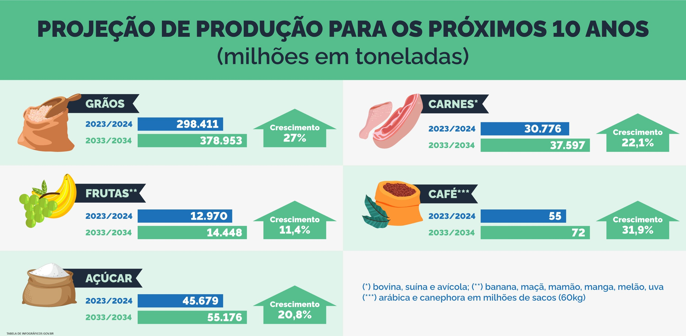
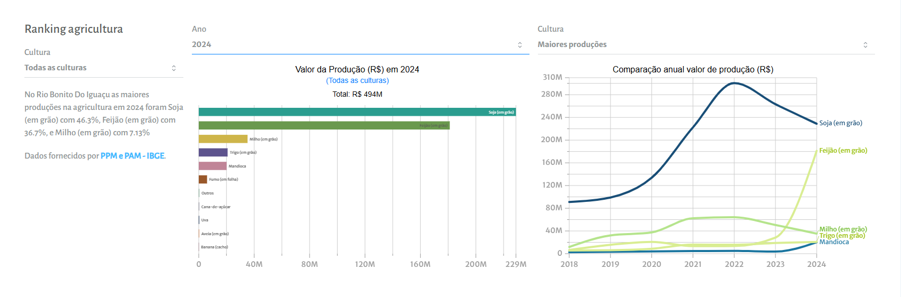
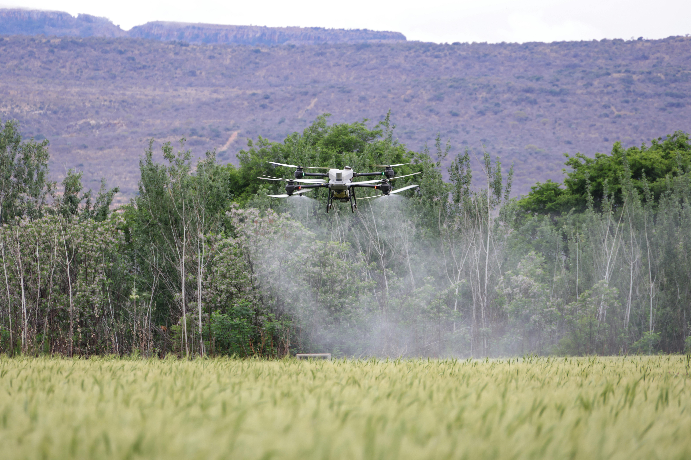
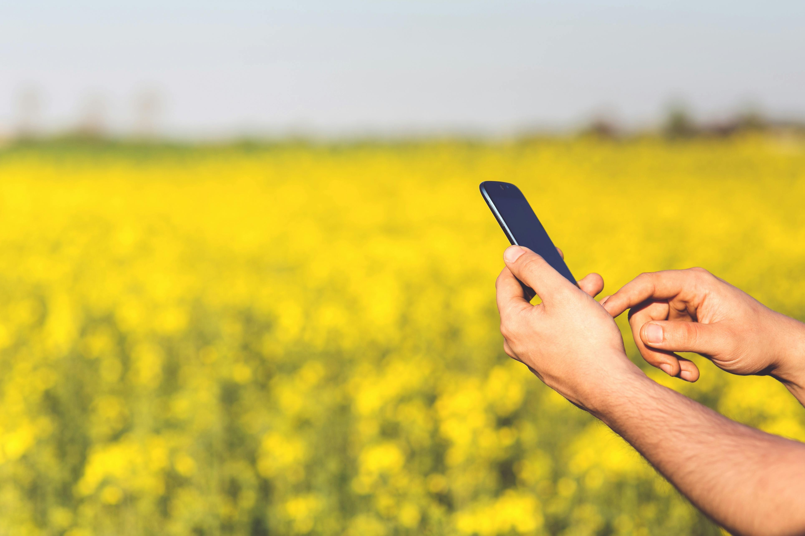
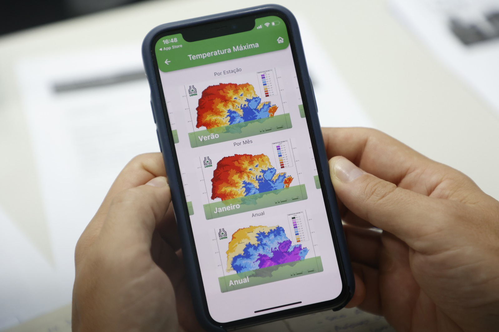
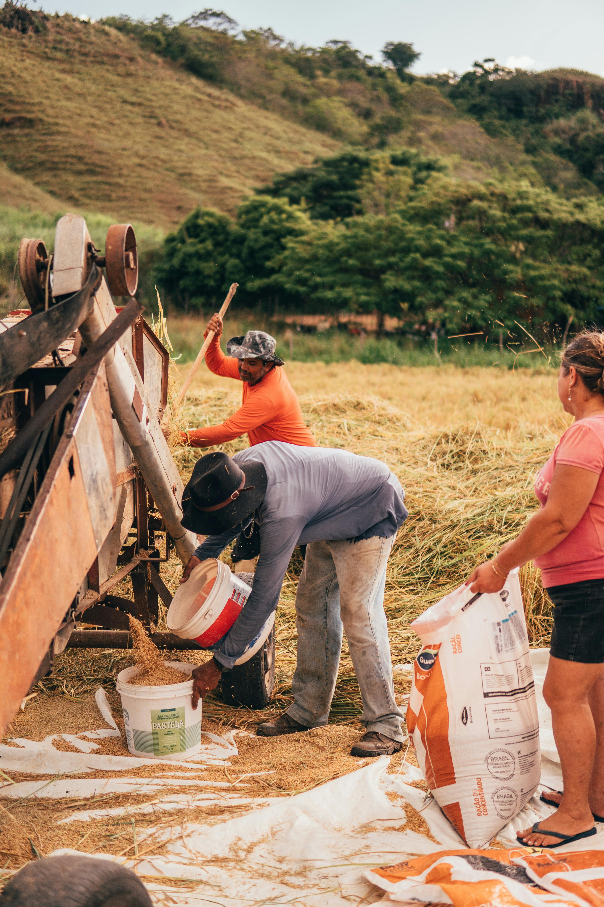
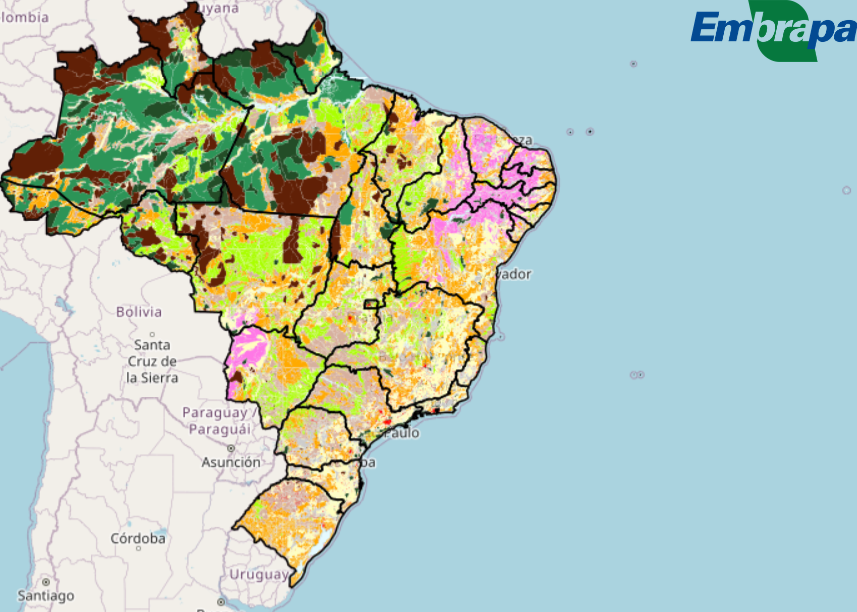
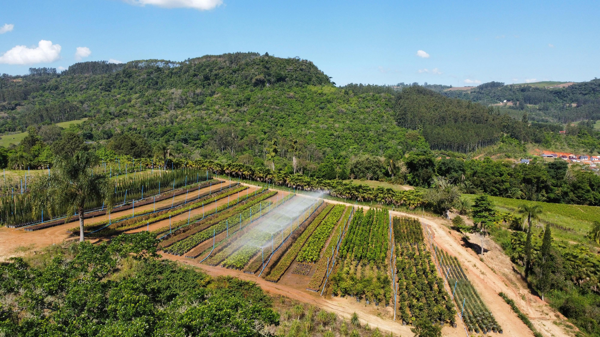
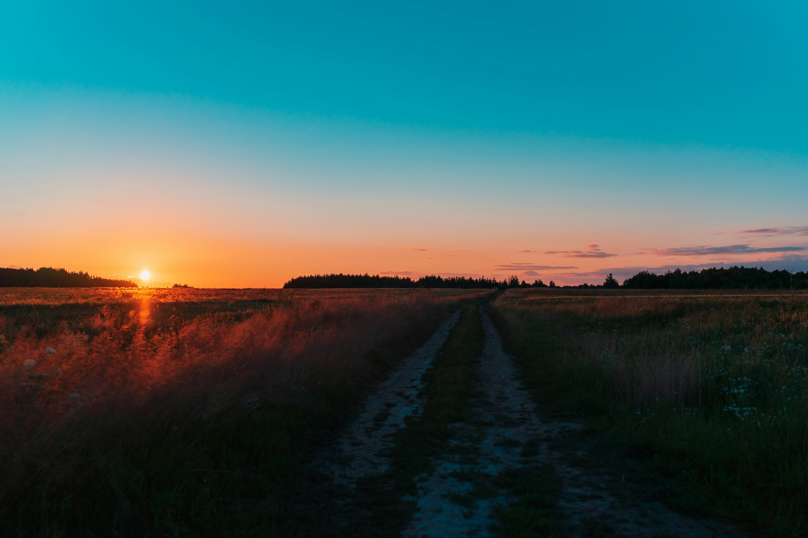

Acessibilidade
Ajuste o site para o seu conforto visual:
Tamanho atual: 100%
Produção Eficiente
Alimentar o futuro com inteligência e responsabilidade.
Desperdício Zero
Otimização de recursos hídricos e insumos agrícolas.
Campo Conectado
A tecnologia digital aplicada diretamente à terra.
A Conexão entre o Campo e a Cidade
Existe um grande desafio na nossa sociedade: a distância entre o consumidor urbano e o produtor rural. Muitas vezes, a origem de cada alimento é desconhecida por quem vive das grandes cidades. O nosso objetivo é aproximar essas duas realidades através da informação, mostrando que o campo moderno opera com tecnologia de ponta e preservação ambiental para abastecer a todos.
🌾 Agro Forte: Alimentando o Futuro
De acordo com projeções demográficas mundiais, a population global continuará crescendo significativamente nas próximas décadas, gerando o grande desafio de garantir a segurança alimentar de bilhões de pessoas. A agricultura lidera a produção sustentável sem a necessidade de expandir desordenadamente as fronteiras agrícolas. FONTES: GOV.BR.

💚 Agro Forte no Paraná
O Paraná é um gigante na produção nacional de grãos e proteína animal. Em Rio Bonito do Iguaçu, o cooperativismo e a agricultura familiar demonstram como a união e a tecnologia transformam pequenas propriedades em grandes potências potentes, respeitando o meio ambiente. FONTES: SEAB-PR / IBGE.

🌱 Futuro Sustentável
Produzir mais não significa desmatar mais. Práticas como o plantio direto e a rotação de culturas protegem o solo contra a erosão, aumentando a resiliência e garantindo que as próximas gerações herdem uma terra fértil e produtiva. FONTES: EMBRAPA.

📱 Tecnologia na Palma da Mão
Com o apoio do IDR-Paraná e sistemas sindicais, agricultores familiares utilizam aplicativos para prever o clima e identificar pragas. Isso traz ciência para a mão do produtor, evitando desperdícios. FONTES: IDR-PARANÁ.

🔄 O Equilíbrio entre Produção e Meio Ambiente
A união entre dados climáticos e manejo responsável cria o equilíbrio perfeito. Aplicativos como Agritempo e Plantix ajudam a produzir mais com menos impacto, preservando recursos naturais. FONTES: IDR-PARANÁ / EMBRAPA.

👨👩👧👦 Raízes que Movem o Brasil
O agro brasileiro é construído por milhares de famílias. Jovens produtores unem o conhecimento de seus pais com novas tecnologias, garantindo que o futuro da agricultura dependa de pessoas e respeito pela terra.

🌎 O Brasil que Alimenta o Mundo
O Brasil é referência mundial em produção e pesquisa. Mostramos diariamente que é possível ser uma potência agrícola e, ao mesmo tempo, proteger recursos naturais para o mundo. FONTES: GOV.BR / EMBRAPA.

🌱 Cultivando um Futuro Sustentável
Tecnologia, sustentabilidade e consciência ambiental caminham juntas. Conectar campo e meio ambiente é cultivar um futuro melhor para o Paraná, para o Brasil e para o mundo inteiro.

Construindo um Brasil Melhor
Cada passo que damos na agricultura, na tecnologia e na sustentabilidade é uma semente plantada no futuro do Brasil. A união entre inovação, educação e respeito ao meio ambiente vai nos levar a ser uma potência global no agro, sem abrir mão da preservação. Juntos, podemos construir um Brasil mais justo, próspero e sustentável para todas as gerações.
